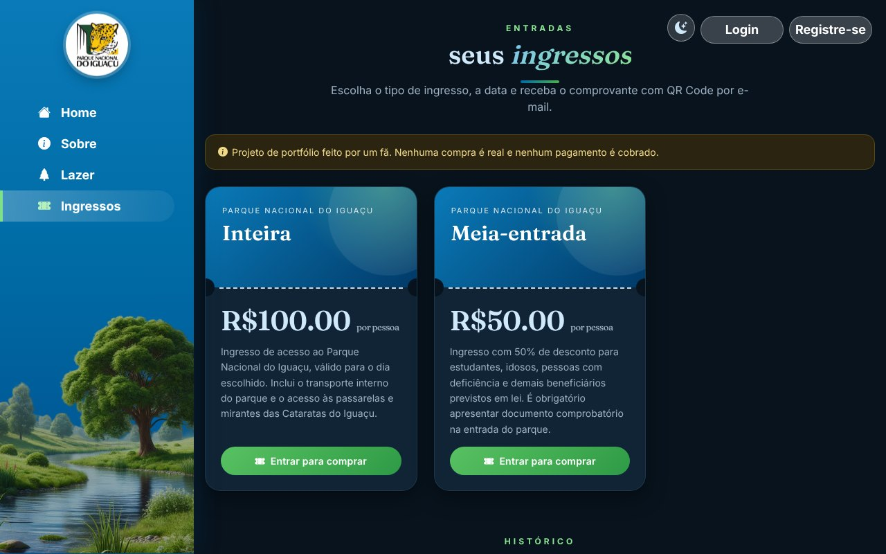
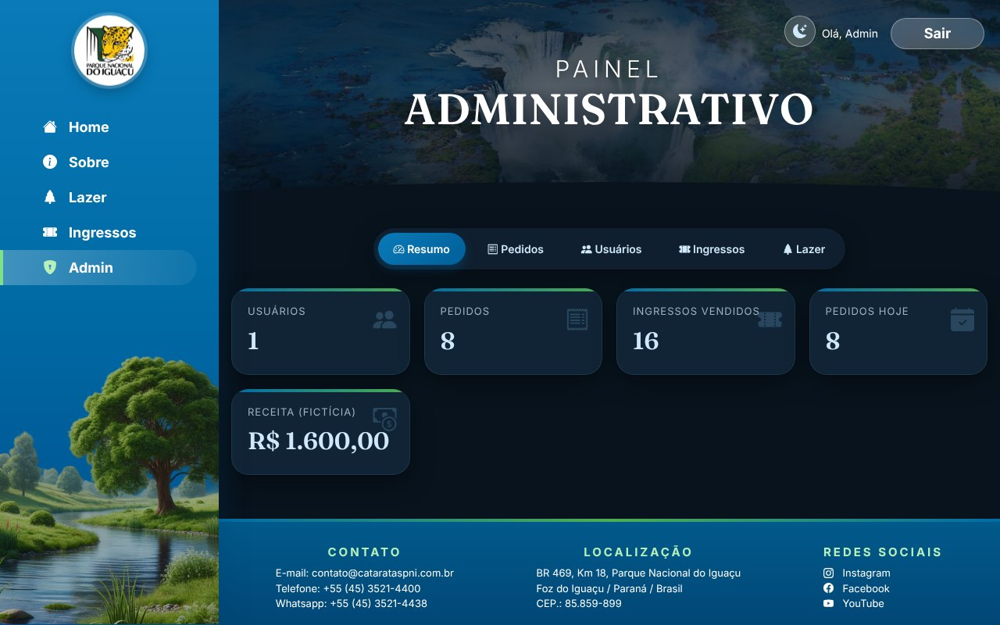

Documentação de sistema: especificação de requisitos, arquitetura, segurança, testes e operação
Uma homenagem de fã. Este sistema não representa o site real das Cataratas do Iguaçu nem o Parque Nacional do Iguaçu. É exclusivamente um projeto de portfólio, com dados e vendas fictícios. · Versão 2.1 · 2 de novembro de 2026
Controle do documento
Título
Cataratas do Iguaçu · Documentação de Sistema (SRS, arquitetura, testes e operação)
Código
CPI-DOC-001
Versão
2.1
Data
2 de novembro de 2026
Situação
Versão final do portfólio
Autoria
Fã do parque, autor do projeto
Produto descrito
Sistema web Cataratas do Iguaçu, v1.0 (front-end Angular, API Node.js, Docker)
Público. Projeto de portfólio, sem vínculo com o Parque Nacional do Iguaçu.
Fontes
Pasta docs/livro do repositório (gerar.py regenera o PDF)
Histórico de revisões
Versão
Data
Descrição
0.1
2026-11-02
Migração do site HTML para Angular e criação do back-end Node.js.
1.0
2026-11-02
Primeiro livro: visão geral, requisitos, arquitetura e operação.
2.0
2026-11-02
Reestruturação conforme ISO/IEC/IEEE 29148 e 42010: partes, critérios de aceitação, casos de uso, diagramas C4 e UML, ADRs, modelo de ameaças, plano de testes e matriz de rastreabilidade.
2.1
2026-11-02
Testes ponta a ponta versionados (Playwright), fluxo de CI e correção de acessibilidade (WCAG 2.5.3); rastreabilidade atualizada.
Aviso importante
Este documento e o sistema que ele descreve foram criados por um fã, como homenagem às Cataratas do Iguaçu e ao Parque Nacional do Iguaçu, Patrimônio Mundial Natural da UNESCO. O sistema não representa um site real das Cataratas do Iguaçu, não é mantido, aprovado ou endossado pelo parque ou por qualquer órgão responsável e trata-se apenas de um portfólio. Ingressos, preços, pagamentos, e-mails e contatos são fictícios ou ilustrativos; nenhuma compra real é realizada. Para informações oficiais, consulte sempre os canais oficiais do parque. As fotografias pertencem ao acervo do projeto educacional original, sem créditos de autoria informados.
Sumário
Parte I · Contexto e visão do produto4
01Introdução5
02Visão do produto7
Parte II · Especificação de requisitos10
03Descrição geral e interfaces11
04Requisitos funcionais19
05Requisitos não funcionais22
06Regras de negócio24
07Casos de uso26
08Modelo de dados30
Parte III · Projeto e implementação33
09Arquitetura34
10Front-end Angular38
11Back-end e API40
12Segurança42
13E-mail e comprovante44
14Administração e CLI46
Parte IV · Qualidade, operação e encerramento47
15Estratégia e plano de testes48
16Matriz de rastreabilidade51
17Implantação e operação52
18Experiência do usuário e acessibilidade54
19Riscos residuais, limitações e evolução56
AGlossário57
BReferências58
Parte I
Contexto e visão do produto
Por que o sistema existe, para quem e com quais limites.
01 · Introdução
02 · Visão do produto
Capítulo 1
Introdução
1.1 Finalidade do documento
Este livro é a documentação de sistema do Cataratas do Iguaçu. Ele reúne, em um único documento, a especificação de requisitos de software (SRS), a descrição da arquitetura (SAD/SDD), a estratégia de testes, a rastreabilidade e o guia de operação. A estrutura segue as recomendações da ISO/IEC/IEEE 29148:2018 (engenharia de requisitos), da ISO/IEC/IEEE 42010:2022 (descrição de arquitetura) e do modelo de qualidade da ISO/IEC 25010, adaptadas ao porte de um projeto de portfólio.
Projeto de fã, apenas portfólio. O sistema descrito aqui foi criado por um fã, para homenagear as Cataratas do Iguaçu. Ele não representa o site real do parque, não tem vínculo com o Parque Nacional do Iguaçu nem com seus órgãos gestores e não realiza vendas reais. Ingressos, preços, pagamentos, e-mails e contatos são fictícios ou ilustrativos. As fotografias do livro provêm do acervo do projeto educacional original, sem créditos de autoria informados no repositório.
1.2 Escopo do produto
Dentro do escopo
Fora do escopo
Site institucional com informações do parque e atividades de lazer
Cadastro, autenticação e perfis (usuário e superadmin)
Venda fictícia de ingressos com QR Code e comprovante por e-mail
Painel administrativo e CLI de superadmin
Empacotamento e execução com Docker
Pagamento real e emissão fiscal
Validação de entrada na portaria (leitura do QR Code)
Controle de capacidade e calendário por dia
Redefinição de senha por e-mail
Qualquer integração oficial com o parque
1.3 Público-alvo e como usar o documento
Leitor
Capítulos recomendados
Avaliador / recrutador
1, 2, 3 e 19 (visão geral, telas e limitações)
Analista de requisitos / QA
4 a 8, 15 e 16 (requisitos, regras, casos de uso, testes, rastreabilidade)
Desenvolvedor
9 a 14 (arquitetura, front-end, API, segurança, e-mail, CLI)
Operação / DevOps
17 (implantação e operação) e 12 (segurança)
Designer / UX
3, 10 e 18 (telas, sistema de design e acessibilidade)
1.4 Convenções
Identificadores: RF (requisito funcional), RNF (não funcional), RN (regra de negócio), UC (caso de uso), ADR (decisão arquitetural), TC (caso de teste), R (risco).
Prioridade (MoSCoW):Must (essencial), Should (importante), Could (desejável).
Critérios de aceitação: escritos no formato Dado / Quando / Então e verificáveis.
Valores monetários: sempre fictícios, em reais, armazenados em centavos.
1.5 Referências normativas e técnicas
As normas e guias abaixo orientaram a organização do documento e as decisões técnicas. O texto declara alinhamento às práticas, e não certificação ou conformidade formal. A lista completa está no Apêndice B.
Capítulo 2
Visão do produto
2.1 Problema e oportunidade
O Parque Nacional do Iguaçu e suas cataratas inspiram um interesse enorme, mas a experiência digital de um visitante envolve várias etapas: entender horários e atrações, escolher ingresso, comprar e levar o comprovante. O projeto propõe uma jornada fluida e bonita para essas etapas e, ao mesmo tempo, serve como vitrine técnica de um sistema completo: interface moderna, API segura, painel administrativo, e-mail transacional e operação em contêineres.
Cataratas do Iguaçu vistas do alto.
Quedas e mata atlântica ao redor.
2.2 Partes interessadas
Parte interessada
Interesse
Influência
Visitante / usuário
Informação clara e compra de ingresso simples, em celular ou computador
Alta (define a usabilidade)
Superadmin
Manter ingressos, preços, atividades; acompanhar pedidos e usuários
Não envolvido; o projeto é homenagem e não possui vínculo
Nenhuma
2.3 Perfis de usuário (personas)
Marina, 29 · visitante planejando a viagem
Usa o celular, quer ver horários, atividades e comprar ingressos sem se perder. Precisa receber o comprovante no e-mail e abrir o QR Code rapidamente na portaria.
Carlos, 41 · superadmin
Responde pela operação. Precisa ajustar preços, ativar ou desativar tipos de ingresso, acompanhar pedidos e conceder acesso a outras pessoas de forma controlada.
Dev · mantenedor
Sobe o sistema com um comando, cria o primeiro superadmin pelo terminal e precisa de logs, healthcheck e testes confiáveis.
Ana · avaliadora de portfólio
Quer entender rapidamente o que foi construído, como foi decidido e o que ainda é limitação, tudo sustentado por evidências.
2.4 Objetivos e indicadores de sucesso
ID
Objetivo
Indicador
Meta
OB1
Jornada de compra curta
Passos do usuário logado, do clique em Comprar ao QR Code
3 passos (tipo, quantidade e data, confirmar)
OB2
Experiência responsiva
Rolagem horizontal nas telas verificadas
Zero em 390 px e 1280 px
OB3
Carregamento leve
Tamanho publicado do front-end
5,1 MB (reduzido de 36 MB após otimizar imagens)
OB4
Segurança básica sólida
Itens do OWASP Top 10 com controle aplicado
10 de 10 tratados (cap. 12)
OB5
Qualidade verificável
Testes automatizados (API e CLI) e ponta a ponta (interface)
5 de 5 e 12 de 12 aprovados
OB6
Operação simples
Comandos para subir o sistema
1 (docker compose up --build)
2.5 Premissas, restrições e dependências
Tipo
Descrição
Premissa
Os usuários têm navegador moderno e acesso a e-mail.
Premissa
Todos os dados e valores são fictícios; não há tratamento de dados reais de clientes.
Restrição
Sem pagamento real, sem controle de capacidade e sem leitura de QR Code na portaria.
Restrição
Banco SQLite em arquivo: uma única instância da API por volume de dados.
Restrição
Node.js 22.13 ou superior (uso do módulo nativo node:sqlite).
Dependência
Servidor SMTP (Mailpit na demonstração; SMTP real em produção).
Dependência
Google Maps (iframe) para o mapa de como chegar.
Dependência
Registro npm e Docker Hub para construir as imagens.
2.6 Riscos do projeto
Probabilidade (P) e impacto (I) em escala de 1 (baixo) a 3 (alto); severidade = P × I.
ID
Risco
P
I
Sev.
Resposta
R1
Vazamento de credenciais por segredo fraco ou versionado
2
3
6
JWT_SECRET obrigatório (mín. 32 caracteres) em produção; .env fora do Git
R2
Abuso por força bruta no login
2
2
4
Limite de requisições e mensagens genéricas
R3
Falha do SMTP impedindo comprovantes
2
2
4
Pedido não é perdido; estado pendente e reenvio
R4
Perda de dados do SQLite
1
3
3
Volume persistente e procedimento de backup (cap. 17)
R5
Confusão com um site oficial
2
3
6
Aviso de fã em todas as áreas relevantes (RF05) e neste livro
Mitigado: JPEG otimizado, carregamento sob demanda
Parte II
Especificação de requisitos
O que o sistema deve fazer: telas, requisitos, regras, casos de uso e dados.
03 · Descrição geral e interfaces
04 · Requisitos funcionais
05 · Requisitos não funcionais
06 · Regras de negócio
07 · Casos de uso
08 · Modelo de dados
Capítulo 3
Descrição geral e interfaces
3.1 Perspectiva do produto
O sistema é uma aplicação web autônoma de três camadas (apresentação, aplicação e dados) acompanhada de uma ferramenta de linha de comando. Ele interage com dois serviços externos: um servidor SMTP, para o envio de comprovantes, e o Google Maps, apenas por iframe. A figura abaixo apresenta o diagrama de contexto (C4, nível 1).
Figura 3.1 · Diagrama de contexto (C4 nível 1).
3.2 Interfaces externas
ID
Interface
Descrição
IE1
Interface de usuário
SPA Angular responsiva (celular a desktop), temas claro e escuro, em português do Brasil.
IE2
API HTTP/JSON
Endpoints REST sob /api, autenticação por Bearer JWT, erros em { erro, campos } (cap. 11).
IE3
SMTP
Envio de e-mail HTML com anexo inline (cid:qrcode). Servidor configurável por variáveis de ambiente.
IE4
Google Maps
Iframe incorporado no painel Como chegar, permitido pela CSP (frame-src).
IE5
Linha de comando
node src/cli.js superadmin <comando> para gestão de superadmins (cap. 14).
3.3 Visão geral das telas
O design mantém a identidade do projeto original: azul das águas, verde da mata, barra lateral com a ilustração do rio no desktop e menu superior no celular. A evolução adicionou tipografia moderna, vidro fosco no hero, cartões com imagem, bilhetes, animações e tema escuro.
Página inicial: título, chamada para compra e atalhos informativos (modo claro).Lazer: grade responsiva de cartões com imagem, título e resumo.
Detalhes de uma atividade no desktop.
Detalhes no celular.
Ingressos: bilhetes e lista de pedidos do usuário.
Compra: quantidade, data e total.
Comprovante: QR Code e status do e-mail.
Login.
Cadastro.
Home no celular com menu aberto.
Ingressos e pedidos no celular.
Sobre: texto institucional e aviso de projeto de fã.
3.4 Modo claro e modo escuro
Um botão com ícone de sol e lua alterna o tema. Sem escolha prévia, o sistema segue a preferência do sistema operacional; a escolha manual é guardada no navegador e aplicada antes da primeira renderização, evitando o flash de tema errado.

Ingressos no modo escuro.
Lazer no modo escuro (celular).

Painel administrativo no modo escuro, com contadores animados.
3.5 Painel administrativo
Resumo: métricas gerais.Pedidos: consulta com status do e-mail.Edição de um tipo de ingresso.
3.6 Características dos usuários e ambiente
Perfil
Papel no sistema
Acesso
Visitante
Consulta conteúdo público
Sem login
Usuário
Compra e consulta os próprios pedidos
Cadastro e login
Superadmin
Administra ingressos, atividades, pedidos e usuários
Papel superadmin, concedido por outro superadmin ou pela CLI
Desenvolvedor
Opera a infraestrutura e a CLI
Acesso ao terminal / Docker
Capítulo 4
Requisitos funcionais
Os requisitos abaixo são necessários, verificáveis, não ambíguos e rastreáveis, conforme a ISO/IEC/IEEE 29148. Cada um possui prioridade MoSCoW, critério de aceitação e vínculo com um caso de uso. A matriz completa de rastreabilidade está no capítulo 16.
Conteúdo público
ID
Requisito
Prior.
Critério de aceitação
UC
RF01
Exibir a página inicial com título, chamada para compra e atalhos de Funcionamento, Como chegar, Estacionamento e Mapa.
Must
Dado um visitante na página inicial, quando clica em um atalho, então vê o painel correspondente e pode fechá-lo.
UC01
RF02
Exibir a página Sobre com a descrição do parque.
Should
Dado um visitante, quando abre Sobre, então lê o texto institucional e o aviso de projeto de fã.
UC01
RF03
Listar as atividades de lazer em cartões e exibir o detalhe completo em janela modal.
Must
Dado a lista carregada, quando clica em Ler mais, então abre o texto completo, fechável por botão, fundo ou Esc.
UC01
RF04
Listar os tipos de ingresso ativos com nome, descrição e preço.
Must
Dado tipos ativos e inativos, quando abre Ingressos, então só os ativos aparecem, com preço em reais.
UC01
RF05
Exibir o aviso de projeto de fã no rodapé e nas páginas Sobre e Ingressos.
Must
Dado qualquer página com layout, então o rodapé informa que não é o site oficial.
UC01
RF06
Permitir alternar entre tema claro e escuro, respeitando a preferência do sistema e guardando a escolha.
Should
Dado sem escolha prévia, então o tema segue o sistema; quando alterna, então persiste ao recarregar.
UC02
Conta e acesso
ID
Requisito
Prior.
Critério de aceitação
UC
RF07
Permitir o cadastro com nome, e-mail, telefone e senha com confirmação.
Must
Dado dados válidos, quando envia, então a conta é criada e a sessão iniciada; e-mail repetido retorna 409.
UC03
RF08
Permitir login por e-mail e senha, mantendo a sessão.
Must
Dado credenciais corretas, então recebe token; incorretas, então 401 com mensagem genérica.
UC04
RF09
Permitir encerrar a sessão.
Must
Quando clica em Sair, então o token é descartado e o menu volta ao estado público.
UC04
RF10
Oferecer recuperação de senha com resposta genérica.
Could
Dado qualquer e-mail válido, então a resposta é a mesma, exista ou não a conta (simulada).
UC04
RF11
Redirecionar visitantes ao login ao tentar comprar e devolvê-los à página de origem.
Should
Dado visitante em Ingressos, quando clica em comprar e faz login, então retorna a Ingressos.
UC05
Compra de ingressos
ID
Requisito
Prior.
Critério de aceitação
UC
RF12
Permitir a compra escolhendo tipo, quantidade (1 a 10) e data da visita.
Must
Dado usuário logado e dados válidos, então o pedido é criado com total calculado no servidor.
UC05
RF13
Gerar código único (CPI-XXXXXXXXXX) e QR Code por pedido.
Must
Dado um pedido, então há um código único e um QR Code em PNG.
UC05, UC06
RF14
Enviar o comprovante com QR Code por e-mail.
Must
Dado pedido criado, então o e-mail é enviado e o pedido marcado como enviado; se falhar, fica pendente.
UC05
RF15
Permitir o reenvio do comprovante.
Should
Dado um pedido próprio, quando reenvia, então novo e-mail é enviado ou erro 502 é informado.
UC06
RF16
Listar os pedidos do usuário com o status do e-mail.
Must
Dado usuário logado, então vê somente os próprios pedidos, do mais recente ao mais antigo.
UC07
Administração
ID
Requisito
Prior.
Critério de aceitação
UC
RF17
Exibir resumo de usuários, pedidos, ingressos vendidos, pedidos do dia e receita.
Should
Dado superadmin, então vê as cinco métricas; outros papéis recebem 403.
UC08
RF18
Permitir ao superadmin consultar todos os pedidos.
Must
Dado superadmin, então lista pedidos de todos, com cliente e status do e-mail.
UC08
RF19
Permitir consultar usuários e alterar o papel (usuário ou superadmin).
Must
Dado superadmin, quando altera o papel de outro usuário, então vale imediatamente; no próprio usuário é bloqueado.
UC08
RF20
Permitir criar e editar tipos de ingresso (nome, preço, descrição, imagem, disponibilidade).
Must
Dado superadmin, quando salva, então a vitrine pública reflete a mudança.
UC09
RF21
Permitir criar, editar e excluir atividades de lazer.
Should
Dado superadmin, quando salva ou exclui, então a página Lazer reflete a mudança.
UC10
Operação
ID
Requisito
Prior.
Critério de aceitação
UC
RF22
Permitir ao desenvolvedor cadastrar e alterar superadmins pelo terminal.
Must
Dado acesso ao terminal, quando executa a CLI, então cria, atualiza, promove, rebaixa ou lista superadmins.
UC11
Situação: os 22 requisitos estão implementados. Os critérios de aceitação são exercitados pelos testes automatizados da API e da CLI (cap. 15) e por verificação scriptada da interface em navegador.
Capítulo 5
Requisitos não funcionais
Os requisitos não funcionais estão classificados pelas características de qualidade da ISO/IEC 25010. Cada item traz uma métrica ou evidência observável e o método de verificação, evitando afirmações vagas.
ID
Característica
Requisito
Métrica / evidência
Verificação
RNF01
Desempenho
Pacote inicial pequeno e rotas carregadas sob demanda (lazy loading).
Inicial: 660 kB bruto / 125 kB transferidos (JS + CSS); páginas de 1,3 a 10 kB cada
Usuário não root, back-end somente leitura, cap_drop ALL, no-new-privileges, nginx sem privilégios
Inspeção do compose e dos Dockerfiles
RNF15
Segurança
Segredos obrigatórios em produção.
Sem JWT_SECRET de 32+ caracteres o servidor não inicia
Execução com e sem a variável
RNF16
Manutenibilidade
Código modular, tipado e testado, sem comentários.
Back-end: ~600 linhas em 6 módulos; front-end Angular standalone; 5 testes de API/CLI e 6 cenários E2E (12 execuções)
Revisão; npm test e playwright test
RNF17
Portabilidade
Execução reproduzível por contêineres.
docker compose up --build sobe frontend, backend e mailpit
Configuração do compose (build não validado no sandbox)
RNF18
Operabilidade
Diagnóstico simples.
GET /api/health; logs no stdout; erros 500 registrados sem vazar detalhes ao cliente
Chamada ao endpoint e inspeção do código
RNF19
Privacidade
Minimização e finalidade (LGPD).
Coleta apenas nome, e-mail, telefone e senha (hash); senhas nunca retornam pela API; dados fictícios
Revisão das rotas e do esquema
As métricas de tamanho foram obtidas do próprio build. Itens marcados como inspeção não substituem testes de carga ou auditorias formais de acessibilidade e segurança, que ficam como evolução (cap. 19).
Capítulo 6
Regras de negócio
Regras de negócio são políticas do domínio que restringem ou orientam os requisitos. Cada regra traz sua justificativa e os requisitos relacionados.
ID
Regra
Justificativa
Relacionados
RN01
O e-mail é único no sistema e normalizado para minúsculas.
Evitar contas duplicadas e ambiguidade no login.
RF07, RF08
RN02
A senha deve ter de 8 a 72 caracteres.
Resistência mínima a adivinhação; 72 bytes é o limite do bcrypt.
RF07
RN03
O telefone deve conter 10 ou 11 dígitos, com DDD.
Padrão telefônico brasileiro.
RF07
RN04
Cada pedido comporta de 1 a 10 ingressos de um mesmo tipo.
Limitar abuso e simplificar o comprovante.
RF12
RN05
A data da visita não pode estar no passado (tolera-se o dia anterior em UTC).
Evitar compras inválidas sem rejeitar usuários de fusos diferentes.
RF12
RN06
O total é calculado no servidor: preço atual do tipo × quantidade.
Integridade financeira; o cliente não define valores.
RF12
RN07
O pedido guarda o nome do tipo no momento da compra.
Preservar o histórico se o tipo for renomeado.
RF12, RF16
RN08
Somente tipos de ingresso ativos podem ser comprados.
Permitir retirar tipos da vitrine sem apagar histórico.
RF04, RF12, RF20
RN09
Meia-entrada exige documento comprobatório na entrada.
Regra do benefício; informativa no sistema.
RF04
RN10
O código do pedido segue CPI- + 10 caracteres hexadecimais maiúsculos.
Identificador curto, único e legível.
RF13
RN11
Um usuário só consulta, reenvia e gera QR Code dos próprios pedidos.
Confidencialidade (controle de acesso por objeto).
RF15, RF16
RN12
O cadastro público sempre cria usuários comuns.
Impedir escalada de privilégio.
RF07
RN13
Um superadmin não altera o próprio papel pelo painel.
Evitar perda acidental de acesso administrativo.
RF19
RN14
A CLI não rebaixa o único superadmin sem --forcar.
Evitar ficar sem administrador.
RF22
RN15
O parque funciona todos os dias: seg-sex 9h-16h; sáb-dom 8h30-16h.
Informação institucional exibida ao visitante.
RF01
RN16
Falha no e-mail não cancela o pedido; ele fica pendente e pode ser reenviado.
Disponibilidade da compra independente do SMTP.
RF14, RF15
RN17
Valores, pagamentos e e-mails são fictícios e sem validade real.
Natureza de portfólio.
RF05
RN18
O sistema deve sempre informar que é homenagem de fã.
Evitar confusão com site oficial (risco R5).
RF05
RN19
Sem escolha prévia, o tema segue o sistema; a escolha manual prevalece.
Respeitar preferência do usuário.
RF06
Capítulo 7
Casos de uso
O diagrama abaixo (UML) apresenta os atores e os casos de uso. A seguir, os casos principais são especificados com pré-condições, fluxos e pós-condições.
A CLI solicita a senha de forma oculta se --senha não for informada.
A CLI valida e grava (ou promove o usuário existente).
Usa atualizar, promover, rebaixar ou listar quando necessário.
Fluxos alternativos e exceções
Senha fora de 8 a 72 caracteres: erro.
E-mail já usado ao atualizar: erro.
Rebaixar o único superadmin sem --forcar: erro (RN14).
Pós-condições
Superadmin criado ou alterado; efeito imediato na API.
Rastreio
RF22; RN12, RN14
Capítulo 8
Modelo de dados
8.1 Diagrama entidade-relacionamento
Figura 8.1 · Modelo entidade-relacionamento.
8.2 Dicionário de dados
usuarios
Coluna
Tipo
Restrições
Descrição
id
INTEGER
PK, autoincremento
Identificador
nome
TEXT
NOT NULL
Nome completo (mín. 3 caracteres na entrada)
email
TEXT
NOT NULL, UNIQUE
E-mail em minúsculas (RN01)
telefone
TEXT
NOT NULL, padrão vazio
10 ou 11 dígitos (RN03)
senha_hash
TEXT
NOT NULL
Hash bcrypt (custo 12)
papel
TEXT
NOT NULL, CHECK (usuario|superadmin)
Perfil de acesso
criado_em
TEXT
NOT NULL, padrão CURRENT_TIMESTAMP
Data de criação (UTC)
pedidos
Coluna
Tipo
Restrições
Descrição
id
INTEGER
PK
Identificador
codigo
TEXT
NOT NULL, UNIQUE
CPI- + 10 hexadecimais (RN10)
usuario_id
INTEGER
NOT NULL, FK → usuarios.id
Dono do pedido
tipo_id
TEXT
NOT NULL
Slug do tipo (referência lógica)
tipo_nome
TEXT
NOT NULL
Nome do tipo na data da compra (RN07)
quantidade
INTEGER
NOT NULL
1 a 10 (RN04, validado na API)
data_visita
TEXT
NOT NULL
AAAA-MM-DD
total_centavos
INTEGER
NOT NULL
Total calculado no servidor (RN06)
email_enviado
INTEGER
NOT NULL, padrão 0
0 pendente, 1 enviado (RN16)
criado_em
TEXT
NOT NULL, padrão CURRENT_TIMESTAMP
Data de criação
tipos_ingresso e atividades
Tabela.coluna
Tipo
Descrição
tipos_ingresso.id
TEXT PK
Slug gerado a partir do nome
tipos_ingresso.nome / descricao
TEXT
Textos exibidos na vitrine
tipos_ingresso.preco_centavos
INTEGER
Preço em centavos (0 a 1.000.000)
tipos_ingresso.imagem
TEXT
Caminho imagens/arquivo
tipos_ingresso.ativo
INTEGER
1 vendável, 0 oculto (RN08)
atividades.id
TEXT PK
Slug do título
atividades.titulo / descricao / alt
TEXT
Conteúdo do cartão e texto alternativo
atividades.imagem
TEXT
Caminho imagens/arquivo
atividades.ordem
INTEGER
Ordem de exibição
8.3 Ciclo de vida do envio do comprovante
Figura 8.2 · Estados do envio de e-mail de um pedido.
8.4 Decisões de modelagem
Dinheiro em centavos inteiros: elimina erros de ponto flutuante.
tipo_nome no pedido: desacopla o histórico de edições futuras do catálogo.
tipo_id sem chave estrangeira: tipos nunca são removidos, apenas desativados.
Semente condicional: dados iniciais só entram se a tabela estiver vazia, preservando edições do admin.
Persistência: arquivo cataratas.db no volume dados, em modo WAL com chaves estrangeiras ativas.
Parte III
Projeto e implementação
Como o sistema é construído: arquitetura, front-end, API, segurança, e-mail e administração.
09 · Arquitetura
10 · Front-end Angular
11 · Back-end e API
12 · Segurança
13 · E-mail e comprovante
14 · Administração e CLI
Capítulo 9
Arquitetura
A arquitetura é descrita com o modelo C4 (contexto, contêineres, componentes) e uma visão de implantação, atendendo ao princípio da ISO/IEC/IEEE 42010 de apresentar o sistema por visões voltadas às preocupações de cada parte interessada.
9.1 Contêineres (C4 nível 2)
Figura 9.1 · Diagrama de contêineres.
Contêiner
Tecnologia
Responsabilidade
nginx
nginx-unprivileged 1.27
Entrega os estáticos do Angular, aplica cabeçalhos de segurança e encaminha /api.
SPA Angular
Angular 22, Bootstrap 5
Interface, formulários, estado de sessão e tema, guarda de rota do painel.
API Node.js
Node 22, Express 5
Regras de negócio, autenticação, API REST, QR Code, e-mail.
SQLite
node:sqlite
Persistência em arquivo no volume dados.
Mailpit
axllent/mailpit
Caixa de entrada de demonstração (UI na porta 8025).
9.2 Componentes da API (C4 nível 3)
Figura 9.2 · Componentes do back-end.
A função createApp({ db, jwtSecret, mailer, staticDir, rateLimitMax }) recebe suas dependências por injeção. Isso permite testar a API com banco em memória e um e-mail simulado, sem rede. O server.js apenas lê o ambiente e compõe as peças reais.
9.3 Visão de implantação
Figura 9.3 · Implantação com Docker Compose.
9.4 Fluxo de uma compra
Figura 9.4 · Diagrama de sequência da compra (UC05).
9.5 Decisões arquiteturais (ADR)
ID
Decisão
Contexto / motivo
Alternativas
Consequências
ADR-01
Angular standalone com sinais
Conversão do projeto HTML/Bootstrap para Angular, com estado local simples.
React, Vue
Menos boilerplate (sem NgModules), rotas com lazy loading, tipagem forte.
ADR-02
Express 5 no back-end
API pequena, ecossistema maduro, requisito de Node.js.
Fastify, NestJS
Composição simples via createApp; menos estrutura imposta.
ADR-03
SQLite via node:sqlite
Portfólio sem serviço de banco externo; execução simples.
PostgreSQL, better-sqlite3
Zero dependência nativa; limita a uma instância; migrar para PostgreSQL é evolução prevista.
ADR-04
Sessão com JWT (HS256, 7 dias)
API stateless e simples de consumir pela SPA.
Sessão em servidor, cookie HttpOnly
Token em localStorage (risco R6); usuário recarregado do banco para refletir mudanças de papel.
ADR-05
Validação com Zod na borda
Uma fonte de verdade de regras, mensagens claras.
Validação manual, Joi
Erros 400 padronizados com campos.
ADR-06
Mesmo domínio via nginx
Front e API na mesma origem evitam CORS e simplificam a CSP.
Domínios separados
Um único ponto de entrada; API não exposta diretamente.
ADR-07
Mailpit como SMTP de demonstração
Mostrar e-mails sem enviar nada à internet.
Mailhog, serviço real
Troca por SMTP real apenas com variáveis de ambiente.
ADR-08
Contêineres endurecidos
Reduzir superfície de ataque.
Contêineres padrão
Back-end somente leitura; exige volume para /data.
ADR-09
Dinheiro em centavos
Exatidão financeira.
Decimal em ponto flutuante
Conversão apenas na camada de apresentação.
ADR-10
CLI para superadmin
Não existir credencial padrão nem rota pública de promoção.
Usuário seed fixo, variável de ambiente
Operação exige acesso ao terminal; senha oculta no prompt.
O front-end usa componentes standalone, sinais (signal, computed) para estado local e formulários reativos. As páginas são carregadas sob demanda por loadComponent, mantendo o pacote inicial enxuto (RNF01).
Rota
Componente
Acesso
/
Home
Público
/sobre
Sobre
Público
/lazer
Lazer
Público
/ingressos
Ingressos
Público (compra exige login)
/login, /registre-se
Login, Registro
Público, sem menu lateral
/admin
Admin
Superadmin (adminGuard)
10.2 Módulos centrais
Arquivo
Função
core/api.ts
Serviço HTTP tipado com todos os endpoints e as interfaces de dados.
core/auth.ts
Sessão em sinais, login, cadastro, logout, atualização do perfil e interceptor (anexa JWT, encerra a sessão em 401).
core/guards.ts
adminGuard e destinoSeguro (impede redirecionamento aberto).
core/modal.ts
Janela modal acessível: Esc, clique no fundo, papel de diálogo.
core/tema.ts
Alternância e persistência do tema claro/escuro.
core/toast.ts
Avisos flutuantes com fechamento automático.
core/reveal.ts, contar.ts
Revelação ao rolar (IntersectionObserver) e contador numérico animado.
layout/nav.ts, footer.ts
Menu lateral/superior com item ativo; rodapé com contatos e aviso de fã.
10.3 Sistema de design
Cores e tokens
Azuis #0a7ab8, #006ca6, #004d8b e #013a68 (águas)
Verdes #58c162, #2f9a46 e #036800 (mata)
Variáveis CSS de superfície, texto, borda e chip, redefinidas no tema escuro
Tipografia
Fraunces (serifa) em títulos
Inter (variável) no texto e na interface
Fontes empacotadas no build, sem CDN
Componentes
Cartão com imagem, degradê e título sobreposto
Bilhete com furos e linha pontilhada
Modal, botões, abas em cápsula, tabelas, métricas, toasts
Movimento
Entrada escalonada ao rolar
Transição entre páginas, esqueletos, contadores
Tudo desativado com movimento reduzido
10.4 Responsividade
As grades usam repeat(auto-fill, minmax(min(100%, 290px), 1fr)); contêineres têm min-width: 0 e overflow-wrap: anywhere; tabelas rolam dentro do próprio quadro; imagens de cartão usam object-fit: cover. Assim, nenhum conteúdo ultrapassa os limites do seu cartão. Verificado sem rolagem horizontal em 390 px e 1280 px.
10.5 Tema claro e escuro
O serviço Tema grava data-tema na raiz do documento e a escolha em localStorage. O script externo tema-init.js (compatível com a CSP, que proíbe scripts inline) define o tema antes do Angular iniciar, evitando o flash. A troca usa uma transição curta de cores.
Capítulo 11
Back-end e API
11.1 Pipeline de requisição
helmet (cabeçalhos e CSP) → cors → express.json (limite de 50 kB) → limitador de taxa (300/min por IP) → rotas. Nas rotas de autenticação aplica-se um segundo limite (50 por 15 min). Rotas protegidas passam por auth (valida o JWT e carrega o usuário) e, no painel, pelo middleware de superadmin. Um tratador de erros final converte exceções em JSON padronizado.
título 2-60; descrição 10-1500; imagem imagens/arquivo
Capítulo 12
Segurança
A segurança foi tratada em camadas e de forma orientada a ameaças: primeiro o modelo STRIDE, depois o mapeamento com o OWASP Top 10 (2021) e, por fim, as recomendações de implantação.
12.1 Modelo de ameaças (STRIDE)
Ameaça
Cenário
Controles
Risco residual
Spoofing (falsificação)
Login de outro usuário
Hash bcrypt, limite de tentativas, JWT assinado com algoritmo fixado, mensagens genéricas
Sem MFA
Tampering (adulteração)
Preço e total do pedido
Total calculado no servidor; SQL parametrizado; validação Zod
Baixo
Repudiation (repúdio)
Negar uma compra ou ação administrativa
Pedidos persistidos com data e dono
Sem trilha de auditoria de ações do admin
Information disclosure (vazamento)
Dados de outros usuários; hashes; versão do servidor
Pedido filtrado por dono; hash nunca retorna; X-Powered-By removido; erros 500 genéricos
Token em localStorage
Denial of service (negação)
Inundar a API ou o login
Limite por IP; corpo de 50 kB; healthcheck e restart
Sem proteção distribuída
Elevation of privilege (elevação)
Usuário virar superadmin
Cadastro sempre cria usuario; papel só por admin ou CLI; middleware em /api/admin; usuário recarregado a cada requisição
Baixo
12.2 Mapeamento OWASP Top 10 (2021)
Categoria
Controle aplicado
A01 Quebra de controle de acesso
Middleware de superadmin; pedidos filtrados por dono; guarda de rota no front como conveniência.
A02 Falhas criptográficas
bcrypt custo 12; JWT HS256 com segredo longo obrigatório; HTTPS recomendado na borda.
Regras de negócio no servidor; modelo de ameaças STRIDE; endpoints mínimos.
A05 Configuração incorreta
Helmet, CSP restritiva, nginx com cabeçalhos, contêineres endurecidos, segredos por ambiente.
A06 Componentes vulneráveis
Dependências mínimas e fixadas por lockfile; npm audit sem vulnerabilidades no momento da entrega.
A07 Falhas de identificação e autenticação
Limite de taxa nas rotas de autenticação; política de senha; hash falso contra enumeração.
A08 Falhas de integridade de software e dados
Builds com npm ci (lockfile); imagens oficiais; sem scripts remotos (CSP).
A09 Falhas de registro e monitoramento
Logs de erro no stdout; healthcheck. Evolução: auditoria de ações administrativas.
A10 SSRF
A API não busca URLs informadas pelo usuário.
12.3 Privacidade e LGPD
Finalidade e minimização: coleta somente nome, e-mail, telefone e senha (em hash), apenas para cadastro e compra.
Segurança: senhas nunca são retornadas; comunicação deve ocorrer sobre HTTPS na borda.
Natureza do projeto: os dados são fictícios e o sistema não deve receber dados pessoais reais em produção sem política de privacidade, base legal e canal de atendimento ao titular (Lei 13.709/2018).
Bloquear scripts externos e embutir o sistema em outros sites
X-Content-Type-Options
nosniff
Impedir interpretação incorreta de tipos
X-Frame-Options
DENY
Clickjacking
Referrer-Policy
no-referrer
Não vazar URLs
Permissions-Policy
geolocation, camera e microfone desativados
Reduzir permissões do navegador
Pontos de atenção. (1) O token fica em localStorage; em produção o ideal é cookie HttpOnly com proteção CSRF. (2) HTTPS e HSTS devem ser providos por um proxy reverso na frente do compose. (3) Não há MFA nem trilha de auditoria administrativa.
12.5 Recomendações de implantação
Gerar JWT_SECRET com openssl rand -hex 32 e mantê-lo fora do Git.
Publicar atrás de HTTPS (Caddy, Traefik ou nginx) com HSTS.
Usar SMTP autenticado real, fazer backups do volume dados e restringir o acesso ao terminal do host.
Capítulo 13
E-mail e comprovante
Ao concluir o pedido, a API gera o QR Code (PNG, com código, tipo, quantidade e data) e envia um e-mail HTML via SMTP. O QR Code vai como anexo inline (cid:qrcode), o que funciona nos principais clientes sem depender de imagens remotas.
E-mail de comprovante de ingresso.
13.1 Conteúdo
Assunto: Seu ingresso - Parque Nacional do Iguaçu (CPI-XXXXXXXXXX).
Saudação com o nome do usuário, escapado contra HTML.
Tabela com código, ingresso, data da visita e total.
QR Code e orientação sobre meia-entrada.
Rodapé informando que é projeto de estudo com valores fictícios.
13.2 Configuração
Variável
Padrão no compose
Uso
SMTP_HOST
mailpit
Servidor SMTP (vazio: apenas registra no log)
SMTP_PORT
1025
Porta
SMTP_SECURE
false
TLS implícito (porta 465)
SMTP_USER / SMTP_PASS
vazio
Credenciais
MAIL_FROM
Cataratas do Iguaçu <nao-responda@...>
Remetente
PUBLIC_URL
http://localhost:8080
Link do site no e-mail
13.3 Comportamento em falhas
O transporte tem tempos limites de conexão e leitura. Em caso de erro, o log registra a falha, o pedido continua válido e fica pendente (RN16). O usuário pode reenviar pela lista de pedidos ou pela janela do QR Code. Em demonstração, os e-mails ficam retidos no Mailpit (porta 8025) e nenhum e-mail sai para a internet.
Capítulo 14
Administração e CLI
14.1 Painel administrativo
Usuários com papel superadmin veem o item Admin e acessam /admin. A rota é protegida no front pelo adminGuard e, de forma definitiva, na API (403 para outros papéis).
Aba
Funções
Resumo
Usuários, pedidos, ingressos vendidos, pedidos do dia e receita fictícia, com contadores animados.
Pedidos
Código, cliente, ingresso, data, total e status do e-mail.
Usuários
Quantidade de pedidos e troca de papel (exceto o próprio).
Ingressos
Criar e editar tipos: nome, preço, descrição, imagem e disponibilidade.
Lazer
Criar, editar e excluir atividades.
14.2 CLI do desenvolvedor
O desenvolvedor gerencia superadmins diretamente no terminal, sem credencial padrão e sem rota pública (ADR-10). A senha, quando omitida, é solicitada de forma oculta, evitando o histórico do shell.
Como a API recarrega o usuário do banco a cada requisição, mudanças de papel feitas pela CLI valem imediatamente.
Parte IV
Qualidade, operação e encerramento
Como sabemos que funciona e como operar: testes, rastreabilidade, implantação, UX e limitações.
15 · Estratégia e plano de testes
16 · Matriz de rastreabilidade
17 · Implantação e operação
18 · Experiência do usuário e acessibilidade
19 · Riscos residuais, limitações e evolução
Capítulo 15
Estratégia e plano de testes
15.1 Estratégia
Nível
Abordagem
Ferramenta
Situação
API (integração)
Servidor real em porta efêmera, banco em memória, e-mail simulado
node --test (nativo)
Automatizado, no repositório
CLI
Execução da função run() contra banco em memória
node --test
Automatizado, no repositório
Interface ponta a ponta
Cadastro, login com retorno, compra, QR, painel, tema e responsividade, em desktop (1280 px) e celular (390 px)
Playwright (Chromium), pasta e2e
Automatizado, no repositório
Integração contínua
Testes da API, build do Angular, ponta a ponta, npm audit, docker compose config e build
GitHub Actions (.github/workflows/ci.yml)
Definido; executa a cada push, ainda não executado no GitHub
Infraestrutura
Build das imagens e subida do compose
Docker (no CI)
Não validado no ambiente de entrega (sem acesso ao registro npm); coberto pelo CI
15.2 Casos de teste automatizados
ID
Caso
Resultado esperado
RF / RN
TC01
Conteúdo público
Health ok; 6 atividades; 2 tipos ativos; contatos do parque
RF01-RF04
TC02
Cadastro com confirmação diferente
400
RF07; RN02
TC03
Cadastro válido com e-mail em maiúsculas
201; e-mail salvo em minúsculas
RF07; RN01
TC04
Cadastro com e-mail repetido
409
RF07; RN01
TC05
Login com senha errada / correta
401 / 200 com token; /auth/me retorna o perfil
RF08
TC06
Acesso sem token
401
RF08
TC07
Pedido sem token
401
RF12
TC08
Pedido com tipo inexistente ou data passada
400
RF12; RN05, RN08
TC09
Pedido válido (3 × meia)
201; total 15.000 centavos; e-mail enviado
RF12-RF14; RN06
TC10
Reenvio e QR Code
200; segundo e-mail; QR em data URL PNG; pedido alheio 404
RF13, RF15; RN11
TC11
Painel com usuário comum / sem token
403 / 401
RF17-RF21
TC12
Painel com superadmin
Resumo e listas corretos
RF17-RF19
TC13
Criar tipo; entrada inválida
201 com slug; 400
RF20
TC14
Desativar tipo
Some da vitrine pública
RF20; RN08
TC15
Criar e excluir atividade
Lista pública reflete (7, depois 6)
RF21
TC16
CLI: criar, atualizar, promover, rebaixar, listar
Papéis e dados conforme comandos
RF22; RN12
TC17
CLI: senha curta; último superadmin; usuário inexistente
Erros específicos
RF22; RN02, RN14
15.3 Cenários ponta a ponta (Playwright)
ID
Cenário
Verificações
RF
ES01
Páginas públicas
Seis rotas carregam sem erro de console e sem rolagem horizontal
RF01-RF05; OB2
ES02
Lazer
Cartão abre os detalhes e fecha com Esc
RF03
ES03
Tema
Alterna, persiste após recarregar e segue prefers-color-scheme
RF06
ES04
Cadastro e compra
Compra sem login leva ao login com retorno; cadastro, retorno a Ingressos, compra, QR Code e pedido listado
RF07, RF11-RF16
ES05
Validação de formulário
Senhas diferentes bloqueiam o cadastro
RF07; RN02
ES06
Painel administrativo
Usuário comum é barrado; superadmin criado pela CLI acessa, percorre as abas e cria uma atividade
RF17-RF22
Cada cenário roda em dois perfis (desktop e celular), totalizando 12 execuções.
15.4 Resultado
cd backend && npm test
# tests 5 · pass 5 · fail 0
cd e2e && npx playwright test
# 12 passed (6 cenários × 2 perfis)
15.5 Defeitos encontrados pelos testes
A verificação em navegador real revelou e corrigiu defeitos que a leitura do código não mostrava: o hero sobrepondo o menu, ícones do botão de tema deslocados por CSS legado, campos do login acinzentados no tema escuro e rótulos acessíveis (aria-label) que substituíam o texto visível de links e campos, contrariando o critério 2.5.3 da WCAG (rótulo no nome).
15.6 Lacunas e plano
Executar o fluxo de CI no GitHub e acompanhar o resultado a cada alteração.
Testes de carga e de segurança (SAST); a varredura de dependências (npm audit) já faz parte do CI.
Auditoria de acessibilidade (WCAG 2.2) com ferramentas automatizadas e leitor de tela.
Capítulo 16
Matriz de rastreabilidade
A matriz liga cada requisito a seus casos de uso, regras de negócio, pontos de implementação e casos de teste, permitindo analisar o impacto de mudanças e comprovar cobertura.
Requisito
Caso de uso
Regras
Implementação
Verificação
RF01-RF04
UC01
RN08, RN15
GET /api/parque, /atividades, /ingressos/tipos
TC01, TC14, ES01
RF05
UC01
RN17, RN18
estático (rodapé, Sobre, Ingressos)
ES01
RF06
UC02
RN19
local (localStorage)
ES03
RF07
UC03
RN01-RN03, RN12
POST /api/auth/registro
TC02-TC04, ES04, ES05
RF08-RF09
UC04
—
POST /api/auth/login, GET /me
TC05, TC06
RF10
UC04
—
POST /api/auth/esqueci-senha
Inspeção (sem teste automatizado)
RF11
UC05
—
local (returnUrl seguro)
ES04
RF12
UC05
RN04-RN08, RN10
POST /api/pedidos
TC07-TC09, ES04
RF13-RF15
UC05, UC06
RN10, RN11, RN16
GET /pedidos/:id/qrcode, POST /reenviar
TC09, TC10, ES04
RF16
UC07
RN11
GET /api/pedidos
TC09, TC10, ES04
RF17-RF19
UC08
RN13
GET /admin/resumo, /pedidos, /usuarios; PATCH /usuarios/:id
TC11, TC12, ES06
RF20
UC09
RN08
GET, POST, PUT /api/admin/tipos
TC13, TC14, ES06
RF21
UC10
—
POST, PUT, DELETE /api/admin/atividades
TC15, ES06
RF22
UC11
RN12, RN14
CLI
TC16, TC17, ES06
Cobertura: 22 de 22 requisitos funcionais possuem caso de uso; 21 têm verificação automatizada (API, CLI ou ponta a ponta). A exceção é o RF10 (recuperação de senha simulada), verificado apenas por inspeção.
Capítulo 17
Implantação e operação
17.1 Serviços
Serviço
Imagem
Porta
Observações
frontend
Build em Node 22 Alpine; execução em nginx-unprivileged
8080
Entrega o Angular e faz proxy de /api; aguarda o back-end saudável.
backend
Node 22 Alpine
3000 (interna)
Usuário node, somente leitura, volume dados, healthcheck.
Verificar SMTP_*; usar Reenviar; consultar os logs
Nada na caixa do Mailpit
SMTP_HOST aponta para outro servidor
Usar SMTP_HOST=mailpit na demonstração
Erro 429
Limite de requisições
Aguardar a janela e reduzir a frequência
Painel inacessível
Usuário não é superadmin
Promover pela CLI (promover --email ...)
Validação de infraestrutura. Os Dockerfiles e o compose foram escritos e revisados, mas o build completo não pôde ser concluído no ambiente de desenvolvimento deste projeto, porque o contêiner de build não tinha acesso ao registro npm. Antes de publicar, execute docker compose up --build em uma máquina com internet.
Capítulo 18
Experiência do usuário e acessibilidade
18.1 Heurísticas de Nielsen
Heurística
Como é atendida
Visibilidade do status do sistema
Esqueletos de carregamento, botões com estado (Processando...), status do e-mail, toasts de confirmação.
Correspondência com o mundo real
Linguagem em português, bilhetes com furos e linha pontilhada, vocabulário do parque.
Controle e liberdade
Fechar janelas por botão, fundo ou Esc; cancelar compra; alternar tema.
Consistência e padrões
Sistema de design único, mesmos botões, cartões e modais em todas as telas.
Prevenção de erros
Quantidade limitada de 1 a 10; data mínima; senha com mostrar/ocultar; confirmação ao excluir atividade.
Reconhecimento em vez de memorização
Ícones junto ao texto, item de menu ativo, breadcrumbs implícitos pelo título.
Flexibilidade e eficiência
Retorno automático à página de origem após login; reenvio rápido do comprovante.
Design estético e minimalista
Hierarquia tipográfica, espaço em branco, imagem como protagonista.
Ajuda a reconhecer e corrigir erros
Mensagens específicas junto aos campos e avisos claros em falhas de e-mail.
Ajuda e documentação
Textos de apoio nas páginas e este documento.
18.2 Acessibilidade (WCAG 2.2)
Prática
Aplicação
Situação
Texto alternativo
Imagens de conteúdo com alt descritivo
Aplicado
Rótulos de formulário
label associado a cada campo; aria-label complementar
Aplicado
Navegação por teclado e foco
Foco visível; Esc fecha janelas; botões nativos
Aplicado
Semântica e ARIA
role="dialog", aria-modal, aria-live em avisos, aria-pressed no tema
Aplicado
Movimento reduzido
prefers-reduced-motion desativa animações
Aplicado
Tamanho de alvos e reflow
Botões de 38 a 44 px; layout fluido sem rolagem horizontal
Aplicado
Nome acessível contém o texto visível (2.5.3)
aria-label redundantes removidos; links e campos usam o texto visível ou label
Aplicado
Operação por teclado
Botão de menu e "Esqueceu sua senha?" focáveis e acionáveis por Enter
Aplicado
Contraste de cores
Paleta com texto claro sobre azul escuro e escuro sobre claro
Verificação visual; medição formal pendente
Auditoria com leitor de tela
—
Pendente
Este documento não declara conformidade formal com a WCAG. As práticas acima foram aplicadas e inspecionadas, e a auditoria completa consta como evolução.
Capítulo 19
Riscos residuais, limitações e evolução
19.1 Limitações conhecidas
ID
Limitação
Impacto
Tratamento sugerido
L1
Pagamento fictício
Sem receita real
Integrar gateway e conciliar pedidos
L2
Recuperação de senha simulada
Usuário não consegue redefinir a senha sozinho
Tokens de uso único por e-mail
L3
QR Code sem validação na portaria
Sem controle de uso do ingresso
App/portal de leitura e estado "utilizado"
L4
Sem controle de capacidade por dia
Venda ilimitada
Estoque por data
L5
Token em localStorage
Exposição em caso de XSS
Cookie HttpOnly + CSRF
L6
SQLite com uma instância
Escala limitada
PostgreSQL e migrações versionadas
L7
Sem trilha de auditoria administrativa
Pouca rastreabilidade de ações do admin
Registro de eventos administrativos
L8
Build do Docker não validado no sandbox
Risco de ajuste fino na primeira execução
CI já define o build; executar em máquina com internet
19.2 Roteiro de evolução
Produto
Redefinição de senha por e-mail
Leitor de QR Code e baixa do ingresso
Calendário e capacidade por data
Internacionalização (inglês e espanhol)
Engenharia
Integração contínua com testes ponta a ponta
PostgreSQL e migrações
Cookie HttpOnly, CSRF e HSTS
Observabilidade e logs estruturados
19.3 Lições do projeto
Documentar requisitos com critérios verificáveis tornou os testes diretos.
Medir e verificar em navegador real antes de afirmar: o build apontou imagens de 15 MB (agora centenas de kB) e a interface revelou defeitos invisíveis na leitura do código.
Apêndice A
Glossário
Termo
Significado
ADR
Registro de decisão arquitetural.
API REST
Interface de comunicação sobre HTTP com recursos e verbos.
bcrypt
Algoritmo de hash de senhas com custo configurável.
C4
Modelo de diagramas de arquitetura: contexto, contêineres, componentes e código.
CLI
Interface de linha de comando.
CSP
Content Security Policy: política que limita as origens de conteúdo.
Docker Compose
Descrição e execução de múltiplos contêineres.
JWT
JSON Web Token: credencial assinada usada para sessões.
LGPD
Lei Geral de Proteção de Dados (Lei 13.709/2018).
Mailpit
Servidor SMTP de testes com caixa de entrada web.
MoSCoW
Técnica de priorização: Must, Should, Could, Won't.
OWASP
Comunidade que mantém guias de segurança de aplicações.
Papel
Perfil de acesso: usuário ou superadmin.
QR Code
Código bidimensional lido por câmeras.
RF / RNF / RN
Requisito funcional, não funcional e regra de negócio.
SAD / SDD / SRS
Descrição de arquitetura, de projeto e especificação de requisitos de software.
SMTP
Protocolo de envio de e-mails.
SPA
Aplicação de página única.
STRIDE
Modelo de ameaças: Spoofing, Tampering, Repudiation, Information disclosure, DoS, Elevation of privilege.
Superadmin
Usuário com acesso ao painel administrativo.
WCAG
Diretrizes de acessibilidade para conteúdo web.
Apêndice B
Referências
Referência
Uso neste documento
ISO/IEC/IEEE 29148:2018 · Systems and software engineering, Life cycle processes, Requirements engineering